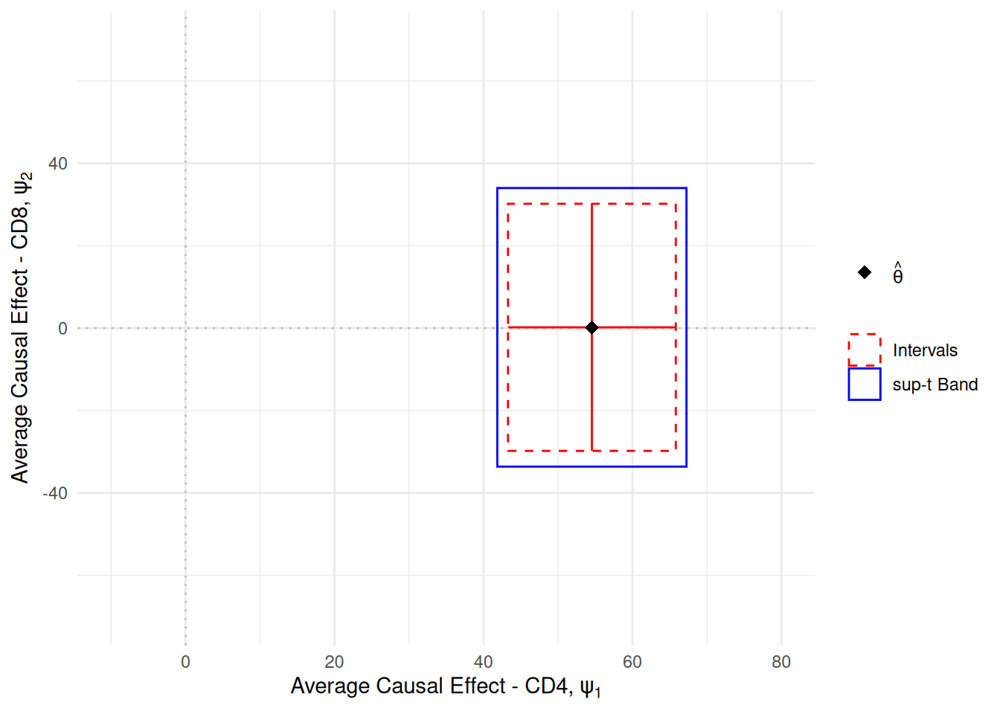
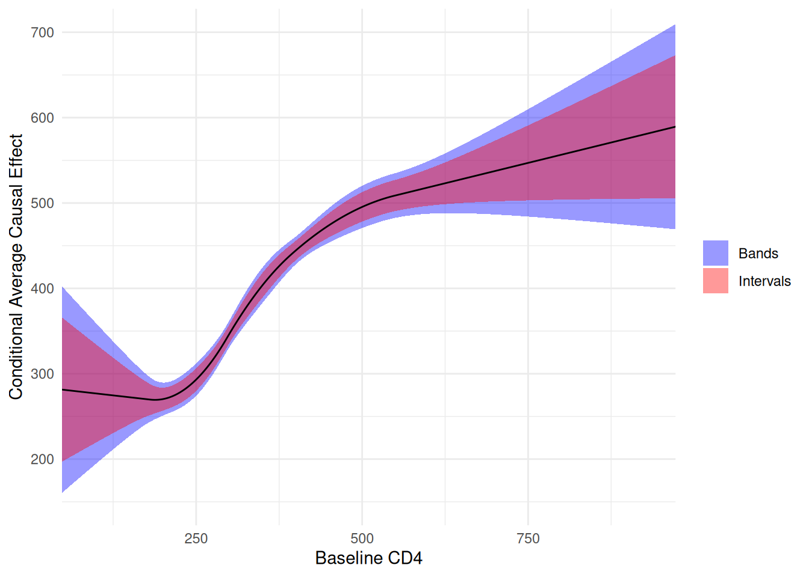

Note
This article is translated from the Zivich et al. (2025): An Introduction to Confidence Bands example in the documentation of delicatessen, deli’s Python counterpart.
Zivich et al. (2025) provides an introduction to different types of confidence regions, including confidence bands. Briefly, confidence bands are an extension of confidence intervals for vectors (or multiple) parameters. The issue with standard confidence intervals, is that they only claim a single parameter at that rate. When considering coverage for multiple parameters, simultaneous confidence interval coverage can be far below the nominal rate. Confidence bands are a set of intervals for a set of parameters.
In Zivich et al., the primary focus is on the sup-t method for computing the confidence bands. The sup-t method adjusts the overall critical value such that it provides a set of confidence regions corresponding to the 1-\alpha coverage rate. See the publication for further details on the procedure.
Here, we will replicate the analysis shown in the Supplementary Materials of Zivich et al. This example covers the usage of confidence bands with nuisance parameter estimation. Data comes from the AIDS Clinical Trial Group (ACTG) 175, which compared 2-drug versus 1-drug antiretroviral therapy for the prevention of disease progression among people with HIV.
Data
d <- actg175Case Study 1: Multiple Outcomes
For the first case, we are interested in the average causal effect of 2-drug versus 1-drug antiretroviral therapy on CD4 and CD8 T cell counts 20-weeks post-randomization. CD4 and CD8 are immunological markers often used to assess immune function, and CD4 is a particular important immunological marker for assessing disease progression among people with HIV.
Here, we are interested in a pair of parameters, which we might indicate as a vector with two elements. For statistical inference, we want coverage for both parameters simultaneously. As such, reporting the confidence bands is appropriate here.
# Design matrix for propensity score model
g_formula <- ~ white + male + idu + factor(karnof) +
age + age_rs1 + age_rs2 + age_rs3 +
cd4c_0wk + cd4_rs1 + cd4_rs2 + cd4_rs3 +
cd8c_0wk + cd8_rs1 + cd8_rs2 + cd8_rs3
Wmat <- model.matrix(g_formula, data = d)
a <- d$treat
y1 <- d$cd4_20wk
y2 <- d$cd8_20wk
n <- length(a)
n_alpha <- ncol(Wmat)
estfunc <- function(theta) {
# Dividing up the parameters
psi_y <- theta[1]
psi_z <- theta[2]
mu_1 <- theta[3]
mu_0 <- theta[4]
om_1 <- theta[5]
om_0 <- theta[6]
alpha <- theta[7:(6 + n_alpha)]
# Constructing inverse probability weights
pi_a <- inverse_logit(drop(Wmat %*% alpha))
ipw <- a / pi_a + (1 - a) / (1 - pi_a)
# Estimating function for propensity score
ef_ps <- ee_regression(theta = alpha, X = Wmat, y = a, model = "logistic")
# Estimating functions for causal parameters
ef_psi1 <- matrix(rep(mu_1 - mu_0, n), nrow = 1) - theta[1]
ef_psi2 <- matrix(rep(om_1 - om_0, n), nrow = 1) - theta[2]
ef_mu1 <- matrix(a * ipw * (y1 - mu_1), nrow = 1)
ef_mu0 <- matrix((1 - a) * ipw * (y1 - mu_0), nrow = 1)
ef_om1 <- matrix(a * ipw * (y2 - om_1), nrow = 1)
ef_om0 <- matrix((1 - a) * ipw * (y2 - om_0), nrow = 1)
# Returning stacked estimating functions
rbind(ef_psi1, ef_psi2, ef_mu1, ef_mu0, ef_om1, ef_om0, ef_ps)
}
# Estimating the parameters
inits <- c(0, 0, 300, 300, 300, 300, rep(0, n_alpha))
estr <- m_estimate(stacked_equations = estfunc, init = inits)
psi <- estr@theta
# Confidence intervals
ci <- confint(estr)
# Confidence bands (1-based subset for R)
cb <- confidence_bands(estr, method = "supt", subset = 1:2, seed = 10177L)The 95% confidence intervals for the two causal effects are
ci[1:2, ]
#> lower upper
#> theta_1 43.28997 65.81966
#> theta_2 -29.79386 30.18211and the 95% confidence bands are
cb
#> lower upper
#> theta_1 41.85505 67.25457
#> theta_2 -33.61372 34.00197As shown here, the confidence bands encapsulate the confidence intervals. These wider intervals are the price we pay to have simultaneous coverage of our parameters. However, this drop in precision is important since our interest (and thus our interpretations) are for more than one parameter. This distinction between confidence regions is slightly easier to understand visually.
One item to note here is that the confidence bands were only computed for a subset of the parameter vector (i.e., the subset argument). This is due to the our inference only being on the parameters of interest. When computing the confidence bands here, we can ignore the nuisance parameters (since we are not making inference for them).
# Plot confidence intervals and bands
region_levels <- c("Intervals", "sup-t Band")
regions <- data.frame(
region = factor(region_levels, levels = region_levels),
xmin = c(ci[1, 1], cb[1, 1]),
xmax = c(ci[1, 2], cb[1, 2]),
ymin = c(ci[2, 1], cb[2, 1]),
ymax = c(ci[2, 2], cb[2, 2])
)
# Confidence intervals as lines through the point estimate
crosshairs <- data.frame(
x = c(ci[1, 1], psi[1]),
xend = c(ci[1, 2], psi[1]),
y = c(psi[2], ci[2, 1]),
yend = c(psi[2], ci[2, 2])
)
# Estimated parameters
estimate <- data.frame(x = psi[1], y = psi[2])
ggplot() +
# Reference lines for the null
geom_hline(yintercept = 0, linetype = 3, color = "gray") +
geom_vline(xintercept = 0, linetype = 3, color = "gray") +
geom_rect(
data = regions,
aes(
xmin = xmin,
xmax = xmax,
ymin = ymin,
ymax = ymax,
color = region,
linetype = region
),
fill = NA
) +
geom_segment(
data = crosshairs,
aes(x = x, xend = xend, y = y, yend = yend),
color = "red"
) +
geom_point(data = estimate, aes(x = x, y = y, shape = "estimate"), size = 3) +
scale_color_manual(values = c("Intervals" = "red", "sup-t Band" = "blue")) +
scale_linetype_manual(values = c("Intervals" = 2, "sup-t Band" = 1)) +
scale_shape_manual(
values = c(estimate = 18),
labels = expression(hat(theta))
) +
coord_cartesian(xlim = c(-10, 80), ylim = c(-70, 70)) +
labs(
x = expression("Average Causal Effect - CD4, " * psi[1]),
y = expression("Average Causal Effect - CD8, " * psi[2]),
color = NULL,
linetype = NULL,
shape = NULL
)
Using this visualization, we can imagine the true value of the parameters as a point in this 2 dimensional Euclidean space. Therefore, our confidence regions (rectangles here) claim to include that point 95% of the times as the number of computed regions from new samples goes to infinity. The red rectangle (implied by the confidence intervals) is too small to cover the parameter at that rate. The blue rectangle, or confidence bands, do coverage the true point at that rate.
Case Study 2: Effect Measure Modification by a Binary Covariate
For the second example, we are interested in studying modification of the effect of antiretroviral therapy on CD4 by gender. Here, we will estimate the following marginal structural model E[Y^a_i | V; \beta] = \beta_0 + \beta_1 a + \beta_2 V_i + \beta_3 a V_i where V_i is gender. Here, interest is in the full set of \beta parameters (a vector of 4 numbers). Again, confidence bands are appropriate in this setting.
# Design matrix for propensity score model
g_formula <- ~ white + male + idu + factor(karnof) +
age + age_rs1 + age_rs2 + age_rs3 +
cd4c_0wk + cd4_rs1 + cd4_rs2 + cd4_rs3 +
cd8c_0wk + cd8_rs1 + cd8_rs2 + cd8_rs3
Wmat <- model.matrix(g_formula, data = d)
# Marginal structural model design matrix
msm <- model.matrix(~ treat + male + treat:male, data = d)
a <- d$treat
y <- d$cd4_20wk
n <- length(a)
n_alpha <- ncol(Wmat)
estfunc <- function(theta) {
beta <- theta[1:4]
alpha <- theta[5:(4 + n_alpha)]
# Estimating function for propensity score
ef_ps <- ee_regression(theta = alpha, X = Wmat, y = a, model = "logistic")
# Constructing weights
pi_a <- inverse_logit(drop(Wmat %*% alpha))
ipw <- a / pi_a + (1 - a) / (1 - pi_a)
# Estimating function for MSM
ef_msm <- ee_regression(theta = beta, X = msm, y = y,
model = "linear", weights = ipw)
# Returning stacked estimating functions
rbind(ef_msm, ef_ps)
}
# Estimating the parameters
inits <- c(300, 0, 0, 0, rep(0, n_alpha))
estr <- m_estimate(stacked_equations = estfunc, init = inits)
psi <- estr@theta
# Confidence intervals
ci <- confint(estr)
# Confidence bands (1-based subset for R)
cb <- confidence_bands(estr, method = "supt", subset = 1:4, seed = 10177L)
# Display results
data.frame(
Names = colnames(msm),
Estimate = round(psi[1:4], 1),
Interval = sapply(1:4, function(i) {
paste0("[", round(ci[i, 1], 1), " ", round(ci[i, 2], 1), "]")
}),
Bands = sapply(1:4, function(i) {
paste0("[", round(cb[i, 1], 1), " ", round(cb[i, 2], 1), "]")
})
)
#> Names Estimate Interval Bands
#> theta_1 (Intercept) 355.8 [327.5 384.2] [323.1 388.6]
#> theta_2 treat 43.4 [8.1 78.7] [2.6 84.2]
#> theta_3 male -27.1 [-58.9 4.7] [-63.8 9.6]
#> theta_4 treat:male 13.5 [-26.5 53.6] [-32.7 59.7]Again, the bands compensate for the fact that we are interested in simultaneous inference. Additionally, we restrict the computation of the confidence bands only to the parameters of interest (the first 4 parameters of theta).
Case Study 3: Effect Measure Modification by a Continuous Covariate
For the final example, we are interested in studying modification by baseline CD4 cell counts. Again, we will use a marginal structural model. However, for a continuous variable we want to model it flexibly in our model. However, flexibly modeling a continuous variable makes it challenging to interpret. Thus, we plot the conditional average causal effect over values of baseline CD4 for interpretative purposes.
The first part of the code will estimate the parameters of the specified marginal structural model.
# Design matrix for propensity score model
g_formula <- ~ white + male + idu + factor(karnof) +
age + age_rs1 + age_rs2 + age_rs3 +
cd4c_0wk + cd4_rs1 + cd4_rs2 + cd4_rs3 +
cd8c_0wk + cd8_rs1 + cd8_rs2 + cd8_rs3
Wmat <- model.matrix(g_formula, data = d)
# Marginal structural model design matrix with spline interaction
msm <- model.matrix(
~ treat + cd4c_0wk + cd4_rs1 + cd4_rs2 + cd4_rs3 +
treat:(cd4c_0wk + cd4_rs1 + cd4_rs2 + cd4_rs3),
data = d
)
a <- d$treat
y <- d$cd4_20wk
n <- length(a)
n_alpha <- ncol(Wmat)
msm_size <- ncol(msm)
estfunc <- function(theta) {
beta <- theta[1:msm_size]
alpha <- theta[(msm_size + 1):(msm_size + n_alpha)]
# Estimating function for propensity score
ef_ps <- ee_regression(theta = alpha, X = Wmat, y = a, model = "logistic")
# Constructing weights
pi_a <- inverse_logit(drop(Wmat %*% alpha))
ipw <- a / pi_a + (1 - a) / (1 - pi_a)
# Estimating function for MSM
ef_msm <- ee_regression(theta = beta, X = msm, y = y,
model = "linear", weights = ipw)
# Returning stacked estimating functions
rbind(ef_msm, ef_ps)
}
# Estimating the parameters
inits <- c(300, rep(0, msm_size - 1), rep(0, n_alpha))
estr <- m_estimate(stacked_equations = estfunc, init = inits)
psi <- estr@theta[1:msm_size]
v_psi <- estr@variance[1:msm_size, 1:msm_size]To create the plot, we will generate some data across a range of equally spaced values between the min and max observed CD4 values. Then we will recreate the splines for this grid (same as those used to fit the model). Using those values, we will compute the predicted 20-week CD4 from the model parameters using the regression_predictions function. From there, we will construct the covariance matrix of the predictions. Finally, we can use all those values to compute the confidence bands.
# Creating grid of CD4 values for plotting
cd4c_grid <- seq(min(d$cd4c_0wk), max(d$cd4c_0wk), length.out = 500)
cd4_grid <- cd4c_grid * sd(d$cd4_0wk) + mean(d$cd4_0wk)
# Create spline terms for prediction grid
cd4_knots <- quantile(d$cd4c_0wk, probs = c(0.05, 0.35, 0.65, 0.95))
cd4_splines <- deli_spline(cd4c_grid, knots = cd4_knots, power = 2,
restricted = TRUE)
# Build prediction data frame
dp <- data.frame(
treat = 1,
cd4c_0wk = cd4c_grid,
cd4_rs1 = cd4_splines[, 1],
cd4_rs2 = cd4_splines[, 2],
cd4_rs3 = cd4_splines[, 3]
)
Xp <- model.matrix(
~ treat + cd4c_0wk + cd4_rs1 + cd4_rs2 + cd4_rs3 +
treat:(cd4c_0wk + cd4_rs1 + cd4_rs2 + cd4_rs3),
data = dp
)
# Generating predictions from estimated MSM parameters
y_hat <- regression_predictions(X = Xp, theta = psi, covariance = v_psi)
y_vals <- y_hat$predicted # Predicted values from model
var_vals <- y_hat$variance # Variance for predictions
# Covariance matrix for predictions
cov_p <- Xp %*% v_psi %*% t(Xp)
# Compute confidence bands
cb <- compute_confidence_bands(y_vals, covariance = cov_p,
method = "supt", seed = 10177L)
# Plot confidence bands and intervals
cace <- data.frame(
cd4 = cd4_grid,
estimate = y_vals,
band_lower = cb[, 1],
band_upper = cb[, 2],
interval_lower = y_hat$lower,
interval_upper = y_hat$upper
)
ggplot(cace, aes(x = cd4, y = estimate)) +
# Confidence bands shading
geom_ribbon(
aes(ymin = band_lower, ymax = band_upper, fill = "Bands"),
alpha = 0.4
) +
# Confidence intervals shading
geom_ribbon(
aes(ymin = interval_lower, ymax = interval_upper, fill = "Intervals"),
alpha = 0.4
) +
# Prediction line on top
geom_line() +
scale_fill_manual(values = c(Bands = "blue", Intervals = "red")) +
coord_cartesian(xlim = c(90, 930), ylim = c(150, 700)) +
labs(
x = "Baseline CD4",
y = "Conditional Average Causal Effect",
fill = NULL
)
Again, we can see the confidence intervals provide much too precise of inference when we are interested in multiple parameters (like a function). While confidence bands have not routinely been used, they ought to be and deli makes them easy to compute.
NOTE: A caveat here is that each case study should be interpreted as if it is independent of the others. If we truly were interested in each of the parameters of each case study and wanted to report them in a single paper, then we should adjust our confidence bands for simultaneous inference on all the parameters described here.
References
Hammer SM, et al. (1996). “A trial comparing nucleoside monotherapy with combination therapy in HIV-infected adults with CD4 cell counts from 200 to 500 per cubic millimeter”. New England Journal of Medicine, 335(15), 1081-1090.
Zivich PN, Cole SR, Greifer N, Montoya LM, Kosorok MR, & Edwards JK. (2025). “Confidence Regions for Multiple Outcomes, Effect Modifiers, and Other Multiple Comparisons”. arXiv:2510.07076